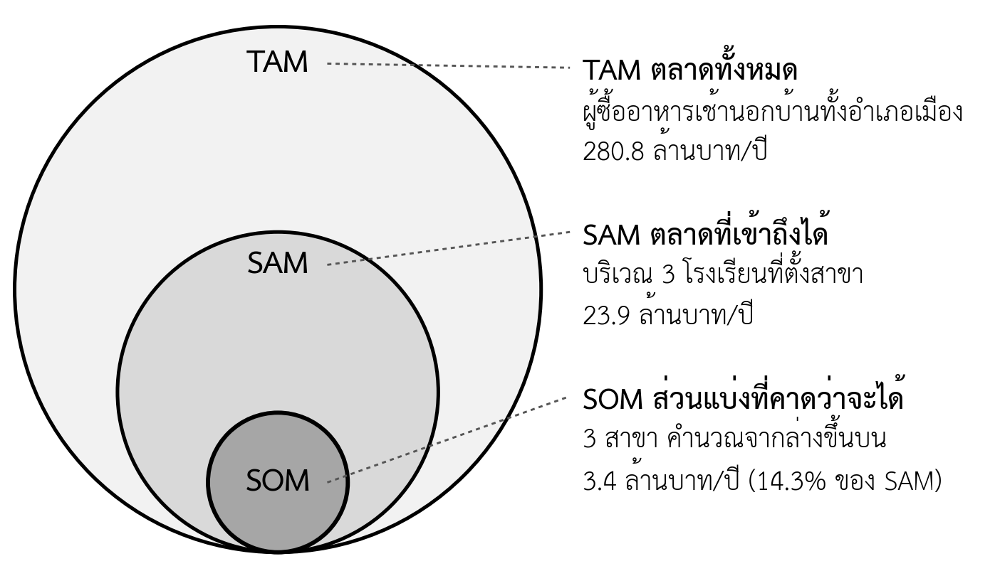

- อธิบายความแตกต่างระหว่างตลาดทั้งหมด ตลาดที่เข้าถึงได้ และส่วนแบ่งที่คาดว่าจะได้ได้
- ประมาณขนาดตลาดแบบจากล่างขึ้นบน และเทียบกับผลแบบจากบนลงล่างได้
- ใช้กรอบ PESTEL ระบุปัจจัยภายนอกที่กระทบธุรกิจได้
- สืบค้นข้อมูลตลาดจากแหล่งข้อมูลทุติยภูมิของไทยที่เป็นทางการได้
- จำแนกแหล่งข้อมูลตามระดับความน่าเชื่อถือ และอ้างอิงที่มาของทุกตัวเลขได้
- ประมาณขนาดตลาดเป็นช่วงสามกรณี และอธิบายว่าตลาดพอสำหรับเป้าหมายปลายทางหรือไม่ได้
- เขียนส่วนการวิเคราะห์ตลาดในแผนธุรกิจ (ใบงานที่ 4 ส่วนที่ 1) ได้
ความนำ
ในบทที่ 3 นิสิตได้คุยกับลูกค้าเป้าหมายจำนวนหนึ่ง และรู้ว่าลูกค้ามีปัญหาอะไรจริง แต่การรู้ว่าลูกค้าห้ารายมีปัญหายังไม่พอสำหรับแผนธุรกิจ ผู้อ่านแผนจะถามต่อว่ามีลูกค้าแบบนี้อีกกี่คน ใช้จ่ายเท่าไร และตลาดนี้กำลังโตหรือหดตัว บทนี้จึงขยายภาพจากลูกค้ารายบุคคลไปสู่ตลาดทั้งหมด ซึ่งยังอยู่ในขั้นตอนที่สามของกระบวนการจัดทำแผน คือการเก็บข้อมูลลูกค้าและตลาด
บทนี้เริ่มจากการประมาณขนาดตลาดสามระดับ ทั้งวิธีจากล่างขึ้นบนและจากบนลงล่าง จากนั้นวิเคราะห์ปัจจัยภายนอกด้วยกรอบ PESTEL แนะนำแหล่งข้อมูลทุติยภูมิของไทยที่นิสิตใช้ได้ทันที และปิดด้วยวิธีประเมินว่าข้อมูลที่หามาน่าเชื่อถือเพียงใด เนื้อหาบทนี้เป็นส่วนแรกของใบงานที่ 4 ส่วนการวิเคราะห์คู่แข่งจะอยู่ในบทที่ 5
4.1 เพราะเหตุใดต้องวิเคราะห์ตลาด
การวิเคราะห์ตลาดตอบคำถามสามข้อที่ผู้อ่านแผนทุกกลุ่มต้องการรู้ ข้อแรก ตลาดใหญ่พอที่ธุรกิจจะอยู่รอดหรือเติบโตตามที่แผนเสนอหรือไม่ ข้อที่สอง ตลาดกำลังเปลี่ยนไปทางใด และการเปลี่ยนแปลงนั้นเป็นโอกาสหรือภัยคุกคาม ข้อที่สาม ตัวเลขยอดขายในแผนการตลาดและแผนการเงินมีฐานจากตลาดจริงหรือไม่ ธนาคารใช้คำตอบเหล่านี้ประเมินความเสี่ยงในการชำระหนี้ ส่วนผู้ลงทุนใช้ประเมินโอกาสเติบโต (หัวข้อ 1.4)
การวิเคราะห์ตลาดต่างจากการสัมภาษณ์ลูกค้าในบทที่ 3 ตรงที่ใช้ข้อมูลทุติยภูมิ (secondary data) เป็นหลัก คือข้อมูลที่ผู้อื่นเก็บและเผยแพร่ไว้แล้ว เช่น สถิติประชากรหรือรายงานอุตสาหกรรม ขณะที่การสัมภาษณ์เป็นข้อมูลปฐมภูมิ (primary data) ที่ทีมเก็บเอง ข้อมูลทั้งสองแบบเสริมกัน ข้อมูลทุติยภูมิบอกว่ามีลูกค้ากี่คน ข้อมูลปฐมภูมิบอกว่าลูกค้าเหล่านั้นต้องการอะไรและจะซื้อจากเราหรือไม่
4.2 การประมาณขนาดตลาด
4.2.1 ตลาดสามระดับ
การประมาณขนาดตลาดที่นิยมในการวางแผนธุรกิจแบ่งตลาดเป็นสามระดับซ้อนกัน (ภาพที่ 4.1) ระดับนอกสุดคือตลาดทั้งหมด (total addressable market: TAM) คือมูลค่าการใช้จ่ายทั้งหมดของทุกคนที่มีความต้องการแบบเดียวกัน ระดับกลางคือตลาดที่เข้าถึงได้ (serviceable available market: SAM) คือส่วนของ TAM ที่ธุรกิจเข้าถึงได้จริงด้วยโมเดลธุรกิจ ทำเล และช่องทางของตน ระดับในสุดคือส่วนแบ่งที่คาดว่าจะได้ (serviceable obtainable market: SOM) คือยอดขายที่ธุรกิจคาดว่าจะได้จริงในช่วงเวลาของแผน เมื่อคำนึงถึงคู่แข่งและกำลังการผลิตของตน

หมายเหตุ: ขนาดของวงกลมแสดงลำดับชั้นของตลาด ไม่ได้เป็นสัดส่วนตามมูลค่าจริง
ตัวเลขที่สำคัญที่สุดสำหรับแผนธุรกิจคือ SOM เพราะเป็นฐานของประมาณการยอดขายในบทที่ 7 ส่วน TAM และ SAM ใช้แสดงว่าธุรกิจยังมีพื้นที่เติบโตหลังจากได้ SOM แล้ว ผู้อ่านแผนที่มีประสบการณ์จะดู SOM และสัดส่วน SOM ต่อ SAM ก่อนเสมอ ถ้าสัดส่วนสูงเกินจริงสำหรับธุรกิจใหม่ แผนจะเสียความน่าเชื่อถือทันที
4.2.2 จากล่างขึ้นบนและจากบนลงล่าง
การประมาณขนาดตลาดทำได้สองวิธี วิธีจากบนลงล่าง (top-down) เริ่มจากตัวเลขรวมของตลาดหรืออุตสาหกรรม แล้วตัดลงตามสัดส่วนที่คาดว่าจะเข้าถึงได้ วิธีจากล่างขึ้นบน (bottom-up) เริ่มจากหน่วยที่เล็กที่สุดที่ธุรกิจควบคุมได้ เช่น จำนวนลูกค้าต่อวันของหนึ่งสาขา แล้วคูณขึ้นไปตามจำนวนสาขา วัน และยอดซื้อเฉลี่ย (ตารางที่ 4.1)
ตารางที่ 4.1 เปรียบเทียบการประมาณขนาดตลาดสองวิธี
| ประเด็น | จากบนลงล่าง | จากล่างขึ้นบน |
|---|---|---|
| จุดเริ่มต้น | ตัวเลขรวมของตลาดหรืออุตสาหกรรม | ลูกค้าต่อวัน ยอดซื้อต่อครั้ง จำนวนสาขา |
| จุดแข็ง | เร็ว ใช้ข้อมูลทางการได้ทันที | ผูกกับกำลังขายจริง ตรวจสอบได้ทีละตัวคูณ |
| จุดอ่อน | ข้ามคำถามว่าจะเข้าถึงลูกค้าได้อย่างไร | ต้องมีข้อมูลระดับหน่วยย่อย ใช้เวลามากกว่า |
| เหมาะกับ | ประมาณ TAM และ SAM | ประมาณ SOM และยอดขายในแผน |
ข้อผิดพลาดที่พบบ่อยที่สุดคือการประมาณ SOM ด้วยวิธีจากบนลงล่าง เช่น "ตลาดมีมูลค่า 280 ล้านบาท ถ้าได้เพียงร้อยละหนึ่งก็ขายได้ 2.8 ล้านบาท" ประโยคนี้ไม่ได้อธิบายเลยว่าร้อยละหนึ่งนั้นมาจากไหน และร้านจะเข้าถึงลูกค้าเหล่านั้นอย่างไร (ข้อผิดพลาดที่ 4 ในตารางที่ 1.8) แนวทางที่ถูกคือประมาณ SOM จากล่างขึ้นบน แล้วใช้วิธีจากบนลงล่างตรวจว่าตัวเลขที่ได้เป็นสัดส่วนที่สมเหตุสมผลของ SAM
ทุกตัวคูณในการประมาณต้องมีที่มา ตัวคูณที่ได้จากแหล่งข้อมูลทางการให้อ้างอิงแหล่ง ตัวคูณที่ได้จากการสัมภาษณ์หรือการนับเองให้ระบุวิธีเก็บ และตัวคูณที่ยังเป็นการคาดเดาให้ติดป้ายเป็นข้อสมมติ ซึ่งต้องนำไปทดสอบตามหัวข้อ 3.5
4.2.3 ประมาณเป็นช่วง ไม่ใช่ตัวเลขเดียว
ตัวเลขขนาดตลาดตัวเดียวให้ความรู้สึกแม่นยำเกินจริง เพราะทุกตัวคูณที่เป็นข้อสมมติอาจคลาดเคลื่อนได้ แนวทางที่ดีกว่าคือประมาณเป็นช่วง (range estimate) สามกรณี ได้แก่ กรณีต่ำ กรณีฐาน และกรณีสูง โดยเปลี่ยนเฉพาะตัวคูณที่ไม่แน่นอนที่สุด แล้วดูว่าผลเปลี่ยนไปเท่าใด ตารางที่ 4.2 แสดงตัวอย่างของกรณีศึกษา ซึ่งตัวคูณที่ไม่แน่นอนที่สุดคือยอดขายของสาขาใหม่เมื่อเทียบกับสาขาเดิม
ตารางที่ 4.2 ส่วนแบ่งที่คาดว่าจะได้สามกรณี (กรณีศึกษาสมมติ)
| กรณี | ยอดขายสาขาใหม่เทียบสาขาเดิม | SOM ต่อปี | สัดส่วนต่อ SAM |
|---|---|---|---|
| ต่ำ | ร้อยละ 60 | 2,882,880 บาท | ร้อยละ 12.1 |
| ฐาน | ร้อยละ 80 | 3,407,040 บาท | ร้อยละ 14.3 |
| สูง | ร้อยละ 100 | 3,931,200 บาท | ร้อยละ 16.5 |
การประมาณเป็นช่วงมีประโยชน์สองทาง ทางแรก ผู้อ่านแผนเห็นว่าผู้เขียนรู้ว่าตัวเลขของตนไม่แน่นอน ซึ่งเพิ่มความน่าเชื่อถือ ทางที่สอง ช่วงนี้จะใช้ต่อในบทที่ 11 เมื่อวิเคราะห์ว่าถ้ายอดขายเป็นกรณีต่ำ ร้านยังผ่อนสินเชื่อได้หรือไม่ ธนาคารมักสนใจกรณีต่ำมากกว่ากรณีฐาน เพราะเป็นกรณีที่กำหนดความเสี่ยงของการให้กู้
4.2.4 ตลาดของเป้าหมายวันละ 3 ล้านบาท
ตลาดสามระดับในกล่องกรณีศึกษาท้ายบทเป็นตลาดของระยะที่ 1 เมื่อเทียบกับโจทย์ของรายวิชา ตลาดทั้งหมดของอำเภอเมืองมีมูลค่าประมาณ 900,000 บาทต่อวัน ต่ำกว่าเป้าหมายวันละ 3 ล้านบาทถึงกว่าสามเท่า แม้ร้านจะได้ลูกค้าทุกคนในอำเภอก็ยังไปไม่ถึง ข้อสรุปนี้บังคับให้ระยะที่ 3 ต้องหาตลาดระดับประเทศ ซึ่งในกรณีศึกษาคือหมูหมักแช่แข็งขายผ่านร้านค้าปลีก (ตารางที่ 1.10)
การประมาณตลาดระดับประเทศใช้วิธีจากบนลงล่าง เริ่มจากประชากรทั้งประเทศ ซึ่งตามทะเบียนราษฎร ณ สิ้นปี 2566 มีจำนวน 66,052,615 คน ตามที่กรมการปกครองประกาศ (THE STANDARD, 2567) แล้วตัดลงด้วยสัดส่วนผู้ซื้อและความถี่ในการซื้อ ตารางที่ 4.3 แสดงการคำนวณ สิ่งที่ต้องสังเกตคือตัวคูณสองตัวกลางเป็นข้อสมมติล้วน ซึ่งต้องหาหลักฐานจากรายงานวิจัยตลาดหรือข้อมูลยอดขายของร้านค้าปลีกก่อนใช้ในแผนสำหรับผู้ลงทุน
ตารางที่ 4.3 ประมาณตลาดหมูหมักพร้อมปิ้งระดับประเทศ (ตัวคูณสมมติเพื่อการสอน)
| ตัวคูณ | ค่า | ที่มาหรือสถานะ |
|---|---|---|
| ประชากรทั้งประเทศ | 66,052,615 คน | ทะเบียนราษฎร สิ้นปี 2566 กรมการปกครอง |
| สัดส่วนที่ซื้อหมูหมักพร้อมปิ้งไปทำเองที่บ้าน | ร้อยละ 20 | ข้อสมมติ ต้องหาหลักฐาน |
| ความถี่ในการซื้อ | 1 แพ็กต่อเดือน (12 แพ็กต่อปี) | ข้อสมมติ ต้องหาหลักฐาน |
| ราคาขายส่งต่อแพ็ก | 80 บาท | ข้อสมมติของกรณีศึกษา |
| มูลค่าตลาดต่อปี | ประมาณ 12,682 ล้านบาท | ผลคูณ |
| ยอดขายผ่านร้านค้าปลีกที่ระยะที่ 3 ต้องการ | ประมาณ 539 ล้านบาทต่อปี | ตารางที่ 1.10 |
| สัดส่วนที่ต้องได้ | ประมาณร้อยละ 4.3 ของตลาด | ผลหาร |
ตัวเลขร้อยละ 4.3 ในตารางนี้ต่างจากกับดัก "ขอแค่ร้อยละ 1" ในหัวข้อ 4.2.2 ตรงที่ไม่ได้ใช้เป็นที่มาของยอดขาย แต่ใช้ตรวจว่ายอดขายที่ได้จากวิธีจากล่างขึ้นบน คือจำนวนร้านค้าปลีกที่จะวางขายคูณยอดขายต่อร้าน เป็นสัดส่วนที่สมเหตุสมผลของตลาดหรือไม่ และเปลี่ยนไปมากเพียงใดถ้าข้อสมมติทั้งสองตัวผิด เช่น ถ้าสัดส่วนผู้ซื้อเป็นเพียงร้อยละ 5 ตลาดจะเหลือหนึ่งในสี่ และสัดส่วนที่ต้องได้จะเพิ่มเป็นประมาณร้อยละ 17 ซึ่งยากกว่ามาก
4.2.5 ห่วงโซ่ตัวคูณของธุรกิจแบบต่าง ๆ
ตัวคูณที่ใช้ประมาณขนาดตลาดจากล่างขึ้นบนขึ้นกับลักษณะของธุรกิจ ตารางที่ 4.4 แสดงห่วงโซ่ตัวคูณของธุรกิจสี่แบบที่นิสิตเลือกทำบ่อย พร้อมแหล่งหลักฐานของแต่ละตัว นิสิตควรเลือกแบบที่ใกล้กับธุรกิจของกลุ่ม แล้วปรับให้ตรงกับวิธีขายจริงของตน
ตารางที่ 4.4 ห่วงโซ่ตัวคูณสำหรับประมาณขนาดตลาดจากล่างขึ้นบน
| ลักษณะธุรกิจ | ห่วงโซ่ตัวคูณ | แหล่งหลักฐานของตัวคูณ |
|---|---|---|
| ร้านหน้าร้าน | คนผ่านหน้าร้านต่อวัน × สัดส่วนที่ซื้อ × ยอดซื้อเฉลี่ย × วันขาย | การนับหน้าร้าน (ตารางที่ 3.7) ยอดขายทดลอง |
| ขายออนไลน์ | ผู้เข้าชมต่อเดือน × อัตราการสั่งซื้อ × ยอดซื้อเฉลี่ย × 12 | สถิติผู้เข้าชมจากหน้าร้านออนไลน์ ผลการทดสอบหน้าเว็บ |
| ขายให้ธุรกิจ (B2B) | จำนวนกิจการเป้าหมาย × สัดส่วนที่ซื้อ × มูลค่าสั่งซื้อต่อปี | DBD DataWarehouse+ การสัมภาษณ์ผู้ซื้อในกิจการ |
| บริการรายเดือน | จำนวนสมาชิก × ค่าสมาชิกต่อเดือน × 12 × (1 − อัตราการเลิกใช้) | การขายล่วงหน้า สถิติการต่ออายุของบริการคล้ายกัน |
ห่วงโซ่ของบริการรายเดือนมีตัวคูณที่ธุรกิจแบบอื่นไม่มี คืออัตราการเลิกใช้ (churn rate) ซึ่งเป็นสัดส่วนของสมาชิกที่ยกเลิกในแต่ละงวด ธุรกิจที่มีสมาชิกเพิ่มเร็วแต่เลิกใช้เร็วด้วย อาจมีรายได้จริงน้อยกว่าที่ดูจากจำนวนผู้สมัครมาก
4.3 การวิเคราะห์สภาพแวดล้อมและแนวโน้ม
ขนาดตลาดในปัจจุบันยังไม่พอ ผู้อ่านแผนต้องการรู้ว่าตลาดจะเปลี่ยนไปอย่างไรในช่วงเวลาของแผน กรอบที่นิยมใช้วิเคราะห์ปัจจัยภายนอกคือ PESTEL ซึ่งแยกปัจจัยเป็นหกด้าน ได้แก่ การเมือง (political) เศรษฐกิจ (economic) สังคม (social) เทคโนโลยี (technological) สิ่งแวดล้อม (environmental) และกฎหมาย (legal) แนวคิดการสำรวจสภาพแวดล้อมภายนอกเป็นด้าน ๆ มักอ้างว่ามีรากจากงานของ Aguilar (1967) ซึ่งเสนอการสำรวจสภาพแวดล้อมทางธุรกิจ และต่อมาถูกขยายเป็นหลายรูปแบบ เช่น PEST และ PESTEL
ตารางที่ 4.5 กรอบ PESTEL และตัวอย่างจากกรณีศึกษาหมูปิ้งอาจารย์ตั้ม
| ด้าน | คำถามหลัก | ตัวอย่างประเด็นที่ร้านต้องตรวจสอบ | กระทบช่องใดของ Canvas |
|---|---|---|---|
| การเมือง (P) | นโยบายรัฐใดส่งเสริมหรือจำกัดธุรกิจ | มาตรการสนับสนุนผู้ประกอบการรายย่อยของรัฐและท้องถิ่น | ต้นทุน แหล่งเงินทุน |
| เศรษฐกิจ (E) | กำลังซื้อและต้นทุนเปลี่ยนไปอย่างไร | ราคาเนื้อหมูที่ขึ้นลงตามฤดูกาลและอุปทาน | ต้นทุน รายได้ |
| สังคม (S) | พฤติกรรมและค่านิยมของลูกค้าเปลี่ยนอย่างไร | ลูกค้าใส่ใจความสะอาดและสุขภาพมากขึ้น · จำนวนนักเรียนในพื้นที่ | คุณค่า กลุ่มลูกค้า |
| เทคโนโลยี (T) | เทคโนโลยีใดเปลี่ยนวิธีซื้อขาย | การสั่งผ่าน LINE · แอปพลิเคชันส่งอาหาร · การชำระเงินด้วย QR | ช่องทาง ความสัมพันธ์ |
| สิ่งแวดล้อม (E) | ประเด็นสิ่งแวดล้อมใดกระทบธุรกิจ | ควันจากการปิ้ง · ขยะบรรจุภัณฑ์พลาสติก | กิจกรรม ต้นทุน |
| กฎหมาย (L) | กฎหมายใดที่ต้องปฏิบัติ | ใบอนุญาตจำหน่ายอาหารจากท้องถิ่น · การเก็บข้อมูลลูกค้าในกลุ่ม LINE | กิจกรรม ความสัมพันธ์ |
หมายเหตุ: ประเด็นในตารางเป็นสิ่งที่ร้านต้องตรวจสอบกับแหล่งข้อมูลจริง ไม่ใช่ข้อสรุป รายละเอียดด้านกฎหมายอยู่ในบทที่ 9
การใช้ PESTEL ให้ได้ประโยชน์ต้องไปให้ถึงคำถามว่า "แล้วอย่างไร" ปัจจัยแต่ละข้อต้องตอบได้ว่ากระทบช่องใดของ Canvas และเป็นโอกาสหรือภัยคุกคาม รายการปัจจัยที่ไม่เชื่อมกับธุรกิจเป็นเพียงการคัดลอกข่าว นอกจากนี้ควรแยกแนวโน้ม (trend) ซึ่งเปลี่ยนต่อเนื่องหลายปีและมีหลักฐานจากหลายแหล่ง ออกจากกระแสระยะสั้นที่ขึ้นเร็วและหายเร็ว แผนธุรกิจที่ตั้งอยู่บนกระแสระยะสั้นมีความเสี่ยงสูง
ปัจจัยภายนอกที่สำคัญเปลี่ยนไปเมื่อธุรกิจเปลี่ยนระยะ ร้านหน้าโรงเรียนสามสาขาได้รับผลจากราคาหมูและจำนวนนักเรียนในพื้นที่เป็นหลัก แต่ธุรกิจหมูหมักแช่แข็งที่ขายทั่วประเทศต้องเผชิญมาตรฐานการผลิตอาหาร ข้อตกลงกับร้านค้าปลีกรายใหญ่ และการขนส่งแช่เย็น ตารางที่ 4.6 เทียบ PESTEL ของสองระยะ ซึ่งแสดงอีกครั้งว่าวิธีการไปถึงเป้าหมายวันละ 3 ล้านบาทคือการเข้าไปอยู่ในสภาพแวดล้อมใหม่ ไม่ใช่การทำสิ่งเดิมให้มากขึ้น
ตารางที่ 4.6 ปัจจัย PESTEL ที่ต้องตรวจสอบ ระยะที่ 1 เทียบกับระยะที่ 3 (กรณีศึกษาสมมติ)
| ด้าน | ระยะที่ 1: 3 สาขาในอำเภอเมือง | ระยะที่ 3: แฟรนไชส์และสินค้าแช่แข็งทั่วประเทศ |
|---|---|---|
| การเมือง (P) | มาตรการของท้องถิ่นต่อผู้ค้ารายย่อย | นโยบายส่งเสริม SMEs และแฟรนไชส์ระดับประเทศ |
| เศรษฐกิจ (E) | ราคาหมูรายสัปดาห์ กำลังซื้อในจังหวัด | ราคาหมูทั้งประเทศ กำลังซื้อของครัวเรือน อัตราดอกเบี้ย |
| สังคม (S) | จำนวนนักเรียนในพื้นที่ พฤติกรรมซื้ออาหารเช้า | พฤติกรรมทำอาหารเองที่บ้าน ความนิยมสินค้าแช่แข็ง |
| เทคโนโลยี (T) | การสั่งผ่าน LINE การชำระเงินด้วย QR | ระบบห้องเย็นและการขนส่งแช่เย็น ระบบจัดการร้านแฟรนไชส์ |
| สิ่งแวดล้อม (E) | ควันจากการปิ้งหน้าโรงเรียน | บรรจุภัณฑ์พลาสติกปริมาณมาก การใช้พลังงานของห้องเย็น |
| กฎหมาย (L) | ใบอนุญาตจำหน่ายอาหารจากท้องถิ่น | มาตรฐานและการขออนุญาตผลิตอาหารกับหน่วยงานด้านอาหารและยา สัญญาแฟรนไชส์ |
หมายเหตุ: ทุกประเด็นเป็นสิ่งที่ต้องตรวจสอบกับหน่วยงานและแหล่งข้อมูลจริงก่อนเขียนแผนของแต่ละระยะ
นอกจากข้อมูลจากหน่วยงานรัฐ เครื่องมือที่ช่วยดูแนวโน้มได้ฟรีคือ Google Trends ซึ่งแสดงดัชนีความสนใจในการค้นหา (search interest index) ของคำค้นในช่วงเวลาและพื้นที่ที่เลือก (Google, ม.ป.ป.) ดัชนีนี้เป็นค่าสัมพัทธ์ตั้งแต่ 0 ถึง 100 เทียบกับช่วงที่มีการค้นหาสูงสุด ไม่ใช่จำนวนครั้งที่ค้นหาจริง จึงใช้ดูทิศทางขึ้นลงและฤดูกาลได้ แต่ใช้เป็นตัวคูณในการประมาณขนาดตลาดไม่ได้ ตารางที่ 4.7 สรุปสัญญาณการเติบโตที่นิสิตใช้ประกอบการวิเคราะห์แนวโน้ม
ตารางที่ 4.7 สัญญาณการเติบโตของตลาดและแหล่งข้อมูล
| สัญญาณ | สิ่งที่บอก | แหล่งข้อมูล | ข้อควรระวัง |
|---|---|---|---|
| จำนวนกิจการจดทะเบียนใหม่ในประเภทธุรกิจเดียวกัน | มีผู้เข้ามาในตลาดมากขึ้นหรือน้อยลง | DBD DataWarehouse+ | ไม่รวมกิจการที่ไม่จดทะเบียนนิติบุคคล |
| รายได้รวมของกิจการในอุตสาหกรรม | ตลาดโตหรือหดในภาพรวม | งบการเงินที่นำส่งใน DBD DataWarehouse+ | มีความล่าช้าหนึ่งถึงสองปี |
| ความสนใจในการค้นหา | ความสนใจของผู้บริโภคเพิ่มหรือลด และฤดูกาล | Google Trends | เป็นค่าสัมพัทธ์ ไม่ใช่ยอดขาย |
| จำนวนประชากรกลุ่มเป้าหมาย | ฐานลูกค้าเพิ่มหรือลดในระยะยาว | สถิติประชากรจากการทะเบียน | กลุ่มอายุบางกลุ่มอาจลดลงแม้ประชากรรวมคงที่ |
| ราคาวัตถุดิบหลัก | ต้นทุนและกำไรต่อหน่วยในอนาคต | รายงานราคาสินค้าของหน่วยงานรัฐ | ผันผวนตามฤดูกาล ควรดูหลายปี |
4.4 แหล่งข้อมูลทุติยภูมิของไทย
หน่วยงานรัฐของไทยเผยแพร่ข้อมูลที่นิสิตใช้ประมาณขนาดตลาดได้โดยไม่มีค่าใช้จ่าย ตารางที่ 4.8 แสดงแหล่งที่ใช้บ่อย นิสิตควรเข้าเว็บไซต์ด้วยตนเองเพื่อดูข้อมูลปีล่าสุด เพราะชื่อเมนูและรูปแบบข้อมูลอาจเปลี่ยน
ตารางที่ 4.8 แหล่งข้อมูลทุติยภูมิของไทยสำหรับการวิเคราะห์ตลาด
| แหล่งข้อมูล | ข้อมูลที่ได้ | ใช้ทำอะไรในแผน |
|---|---|---|
| สำนักงานสถิติแห่งชาติ (nso.go.th) | ผลสำรวจระดับประเทศและจังหวัด เช่น ภาวะเศรษฐกิจและสังคมของครัวเรือน สถิติประชากร | จำนวนลูกค้าและค่าใช้จ่ายเฉลี่ย (TAM SAM) |
| สถิติประชากรจากการทะเบียน กรมการปกครอง (เผยแพร่ผ่าน data.go.th) | จำนวนประชากรรายจังหวัด อำเภอ ตำบล | จำนวนลูกค้าในพื้นที่ |
| ศูนย์กลางข้อมูลเปิดภาครัฐ (data.go.th) | ชุดข้อมูลเปิดจากหลายหน่วยงาน | ค้นหาข้อมูลเฉพาะเรื่องที่หน่วยงานอื่นไม่ได้รวมไว้ |
| DBD DataWarehouse+ กรมพัฒนาธุรกิจการค้า (datawarehouse.dbd.go.th) | รายชื่อนิติบุคคล ประเภทธุรกิจ งบการเงินที่นำส่ง | จำนวนและขนาดคู่แข่งที่จดทะเบียน (บทที่ 5) |
| สำนักงานส่งเสริมวิสาหกิจขนาดกลางและขนาดย่อม (sme.go.th) | รายงานและสถิติ SMEs | ภาพรวมอุตสาหกรรมและแนวโน้ม |
| ธนาคารแห่งประเทศไทย (bot.or.th) | ภาวะเศรษฐกิจ อัตราดอกเบี้ย เงินเฟ้อ | ปัจจัยด้านเศรษฐกิจ (PESTEL) ต้นทุนเงินกู้ (บทที่ 12) |
ข้อมูลทุติยภูมิมักไม่ตรงกับคำถามของธุรกิจพอดี เช่น สถิติประชากรบอกจำนวนวัยรุ่นในอำเภอ แต่ไม่บอกว่ามีกี่คนซื้ออาหารเช้านอกบ้าน ช่องว่างนี้ต้องเติมด้วยข้อมูลปฐมภูมิ เช่น การนับลูกค้าหน้าโรงเรียนหรือการสัมภาษณ์ และต้องระบุให้ชัดว่าตัวเลขใดมาจากแหล่งใด
4.5 การประเมินความน่าเชื่อถือของข้อมูล
ข้อมูลจากอินเทอร์เน็ตมีคุณภาพแตกต่างกันมาก ตัวเลขเดียวกันอาจถูกคัดลอกต่อกันหลายทอดจนไม่รู้ว่าต้นทางคือใคร เกณฑ์ที่ใช้ตรวจแหล่งข้อมูลอย่างเป็นระบบคือการทดสอบ CRAAP (CRAAP test) ซึ่งพัฒนาโดยบรรณารักษ์ของมหาวิทยาลัยแห่งรัฐแคลิฟอร์เนีย ชิโก (Blakeslee, 2004) ตารางที่ 4.9 สรุปเกณฑ์ห้าข้อและคำถามที่ใช้กับข้อมูลตลาด
ตารางที่ 4.9 เกณฑ์ CRAAP สำหรับตรวจแหล่งข้อมูลตลาด
| เกณฑ์ | คำถามที่ใช้ตรวจ |
|---|---|
| ความทันสมัย (currency) | ข้อมูลปีใด ยังใช้แทนสภาพปัจจุบันได้หรือไม่ |
| ความเกี่ยวข้อง (relevance) | ตรงกับพื้นที่ กลุ่มลูกค้า และสินค้าของเราหรือไม่ |
| ผู้รับผิดชอบ (authority) | ใครเผยแพร่ เป็นหน่วยงานที่มีหน้าที่เก็บข้อมูลนี้หรือไม่ |
| ความถูกต้อง (accuracy) | อธิบายวิธีเก็บข้อมูลไว้หรือไม่ ตรงกับแหล่งอื่นหรือไม่ |
| วัตถุประสงค์ (purpose) | เผยแพร่เพื่อให้ข้อมูล หรือเพื่อขายสินค้าหรือโฆษณา |
หลักปฏิบัติที่ใช้ในรายวิชามีสามข้อ ข้อแรก ใช้ตัวเลขจากแหล่งต้นทาง ไม่ใช่จากบทความหรือโพสต์ที่คัดลอกต่อมา ข้อที่สอง ตัวเลขสำคัญควรยืนยันจากอย่างน้อยสองแหล่ง ถ้าสองแหล่งไม่ตรงกัน ให้ระบุทั้งสองค่าและอธิบายว่าเลือกใช้ค่าใดเพราะอะไร ข้อที่สาม ทุกตัวเลขในแผนต้องมีการอ้างอิง ซึ่งเป็นทั้งเรื่องความน่าเชื่อถือและจรรยาบรรณของผู้ประกอบการ (ข้อผิดพลาดที่ 7 ในตารางที่ 1.8)
เพื่อให้ทำตามหลักทั้งสามข้อได้จริง กลุ่มควรมีแบบบันทึกที่มาของข้อมูล (data source log) ตั้งแต่วันแรกของการสืบค้น ทุกครั้งที่ได้ตัวเลขมาให้บันทึกทันที โดยมีอย่างน้อยหกช่อง คือ ตัวเลขที่ได้ หน่วย ปีของข้อมูล แหล่งและลิงก์ วันที่สืบค้น และผลการตรวจด้วยเกณฑ์ CRAAP แบบบันทึกนี้ช่วยให้เขียนเอกสารอ้างอิงได้ครบ และช่วยตอบเมื่อผู้อ่านแผนถามว่าตัวเลขนี้มาจากไหน ตารางที่ 4.10 แสดงตัวอย่างของกรณีศึกษา
ตารางที่ 4.10 ตัวอย่างแบบบันทึกที่มาของข้อมูล (กรณีศึกษาสมมติ)
| ตัวเลข | หน่วย | ปีของข้อมูล | แหล่ง | วันที่สืบค้น | ผลตรวจ CRAAP |
|---|---|---|---|---|---|
| 66.05 ล้าน | คน | สิ้นปี 2566 | กรมการปกครอง ผ่าน THE STANDARD | 8 พ.ย. 2569 | ผ่าน แต่ควรหาตัวเลขปีล่าสุดจากแหล่งต้นทาง |
| ร้อยละ 40.4 | ร้อยละของนักเรียน | 2569 | การนับหน้าโรงเรียนสาขาเดิม 5 วัน | ตารางที่ 3.7 | ผ่าน ใช้ได้เฉพาะโรงเรียนสาขาเดิม |
| 1,310,400 | บาทต่อปี | 2569 | สมุดบัญชีร้าน | เดือนล่าสุด | ผ่าน ควรใช้ยอดย้อนหลัง 12 เดือนจริง |
| 30 | บาทต่อคนต่อวัน | 2569 | ผลสัมภาษณ์ลูกค้า 6 ราย | บทที่ 3 | ยังไม่ผ่านเกณฑ์ความถูกต้อง ต้องสังเกตราคาร้านรอบโรงเรียนเพิ่ม |
4.6 จากการวิเคราะห์ตลาดสู่แผนธุรกิจ
ผลการวิเคราะห์ในบทนี้เป็นเนื้อหาของแผนธุรกิจส่วนที่ 3 (ตารางที่ 1.6) ร่วมกับข้อมูลลูกค้าจากบทที่ 3 ส่วนนี้ควรมีสี่องค์ประกอบ ได้แก่ คำอธิบายกลุ่มลูกค้าพร้อมหลักฐานจากการสัมภาษณ์ ตารางประมาณขนาดตลาดสามระดับที่แสดงตัวคูณและที่มาทุกตัว การวิเคราะห์ PESTEL ที่ระบุโอกาสและภัยคุกคาม และข้อสรุปว่าตลาดใหญ่และเติบโตพอสำหรับแผนหรือไม่
ตัวเลข SOM ที่ได้ในบทนี้ยังเป็นการประมาณเบื้องต้น เมื่อนิสิตกำหนดกลยุทธ์การตลาดในบทที่ 7 จะแปลง SOM เป็นประมาณการยอดขายรายเดือน ซึ่งต้องสอดคล้องกับตัวเลขในบทนี้ ถ้าประมาณการยอดขายในบทที่ 7 สูงกว่า SOM มาก แสดงว่าต้องกลับมาทบทวนข้อสมมติตัวใดตัวหนึ่ง
ตารางที่ 4.11 แสดงรูปแบบตารางตัวคูณที่ใบงานที่ 4 ต้องการ โดยใช้กรณีศึกษาเป็นตัวอย่าง จุดสำคัญคือคอลัมน์ที่มาและป้าย ซึ่งทำให้ผู้อ่านเห็นทันทีว่าตัวเลขใดพิสูจน์แล้ว และตัวเลขใดยังต้องหาหลักฐานเพิ่ม ในตัวอย่างนี้มีตัวคูณเพียงสองตัวที่เป็นข้อเท็จจริง ซึ่งพบได้บ่อยในแผนระยะแรก สิ่งที่ผู้อ่านคาดหวังไม่ใช่ข้อเท็จจริงทุกตัว แต่เป็นความชัดเจนว่าตัวใดเป็นข้อสมมติและจะพิสูจน์อย่างไร
ตารางที่ 4.11 ตารางตัวคูณสำหรับประมาณขนาดตลาดของหมูปิ้งอาจารย์ตั้ม (กรณีศึกษาสมมติ)
| ตัวคูณ | ค่า | ที่มาหรือวิธีหาหลักฐาน | ป้าย |
|---|---|---|---|
| ผู้ซื้ออาหารเช้านอกบ้านในอำเภอเมือง | 30,000 คน | สถิติประชากรและสถิตินักเรียน แล้วคูณสัดส่วนที่ซื้อนอกบ้าน | ข้อสมมติ |
| ค่าอาหารเช้าเฉลี่ย | 30 บาท/คน/วัน | ผลสัมภาษณ์ลูกค้า (บทที่ 3) ยืนยันด้วยการสังเกตราคาร้านรอบโรงเรียน | ข้อสมมติ |
| วันขายต่อปี | 312 วัน | สมุดบัญชีร้าน (26 วัน × 12 เดือน) | ข้อเท็จจริง |
| นักเรียนในสามโรงเรียน | 4,500 คน | ขอข้อมูลจากโรงเรียน หรือสถิติการศึกษาของหน่วยงานรัฐ | ข้อสมมติ |
| สัดส่วนนักเรียนที่ซื้ออาหารเช้านอกบ้าน | ร้อยละ 40 | นับลูกค้าหน้าโรงเรียนช่วง 06.30–07.30 น. | ข้อสมมติ |
| คนทำงานใกล้โรงเรียน | 1,500 คน | สำรวจสถานที่ทำงานในรัศมีที่เดินถึง | ข้อสมมติ |
| สัดส่วนคนทำงานที่ซื้ออาหารเช้านอกบ้าน | ร้อยละ 50 | ผลสัมภาษณ์ลูกค้า | ข้อสมมติ |
| รายได้สาขาเดิม | 1,310,400 บาท/ปี | สมุดบัญชีร้าน | ข้อเท็จจริง |
| ยอดขายสาขาใหม่เทียบสาขาเดิม | ร้อยละ 80 | เกณฑ์ผ่านของบัตรทดสอบการขายทดลอง (บทที่ 3) | ข้อสมมติ |
เมื่อได้ตารางตัวคูณแล้ว ส่วนการวิเคราะห์ตลาดในเล่มแผนธุรกิจควรเขียนเป็นความเรียงสั้นที่ตอบคำถามของผู้อ่าน แล้วใช้ตารางเป็นหลักฐานประกอบ ไม่ใช่วางตารางโดยไม่อธิบาย กล่องต่อไปนี้แสดงตัวอย่างการเขียนส่วนนี้ของกรณีศึกษาสำหรับแผนที่ยื่นต่อธนาคาร
บทสรุป
เมื่อศึกษาบทนี้แล้ว นิสิตสามารถประมาณขนาดตลาดสามระดับ โดยใช้วิธีจากล่างขึ้นบนเป็นหลักสำหรับส่วนแบ่งที่คาดว่าจะได้ และใช้วิธีจากบนลงล่างตรวจความสมเหตุสมผล นิสิตวิเคราะห์ปัจจัยภายนอกด้วย PESTEL โดยเชื่อมแต่ละปัจจัยกับช่องของ Canvas สืบค้นข้อมูลจากแหล่งทางการของไทย และตรวจความน่าเชื่อถือของแหล่งข้อมูลด้วยเกณฑ์ CRAAP
นิสิตนำความรู้นี้ไปใช้ทันทีในใบงานที่ 4 ส่วนที่ 1 ซึ่งจะเป็นแผนธุรกิจส่วนที่ 3 ร่วมกับผลการสัมภาษณ์ลูกค้า บทที่ 5 จะต่อจากภาพตลาดไปสู่คู่แข่งที่อยู่ในตลาดเดียวกัน เพื่อหาตำแหน่งทางการตลาดที่ธุรกิจของกลุ่มจะยืนได้ และทำใบงานที่ 4 ให้ครบ
คำศัพท์สำคัญ
- ข้อมูลปฐมภูมิและข้อมูลทุติยภูมิ (primary and secondary data)
- ตลาดทั้งหมด (total addressable market: TAM)
- ตลาดที่เข้าถึงได้ (serviceable available market: SAM)
- ส่วนแบ่งที่คาดว่าจะได้ (serviceable obtainable market: SOM)
- วิธีจากบนลงล่างและวิธีจากล่างขึ้นบน (top-down and bottom-up)
- PESTEL
- แนวโน้ม (trend)
- การทดสอบ CRAAP (CRAAP test)
- การประมาณเป็นช่วง (range estimate)
- อัตราการเลิกใช้ (churn rate)
- ดัชนีความสนใจในการค้นหา (search interest index)
- แบบบันทึกที่มาของข้อมูล (data source log)
คำถามทบทวน
- TAM SAM และ SOM ต่างกันอย่างไร และตัวเลขใดสำคัญที่สุดสำหรับแผนธุรกิจ เพราะเหตุใด
- จงอธิบายจุดแข็งและจุดอ่อนของการประมาณขนาดตลาดแบบจากบนลงล่างและจากล่างขึ้นบน
- ประโยค "ตลาดใหญ่มาก ขอแค่ร้อยละ 1 ก็พอ" มีปัญหาอย่างไร จงเสนอวิธีเขียนใหม่
- ข้อมูลปฐมภูมิและข้อมูลทุติยภูมิเสริมกันอย่างไรในการวิเคราะห์ตลาด จงยกตัวอย่าง
- จงเลือกธุรกิจหนึ่งประเภท แล้ววิเคราะห์ PESTEL ด้านละหนึ่งข้อ พร้อมระบุว่ากระทบช่องใดของ Canvas
- นิสิตต้องการรู้จำนวนร้านอาหารที่จดทะเบียนนิติบุคคลในจังหวัดหนึ่ง ควรใช้แหล่งข้อมูลใด และข้อมูลนั้นมีข้อจำกัดอะไร
- จงใช้เกณฑ์ CRAAP ประเมินตัวเลขขนาดตลาดที่พบในโพสต์โฆษณาของบริษัทที่ขายแฟรนไชส์
- จากกล่องกรณีศึกษา เพราะเหตุใดการเทียบสัดส่วน SOM ต่อ SAM ของสาขาใหม่กับสาขาเดิมจึงทำให้ตัวเลขน่าเชื่อถือขึ้น
- เพราะเหตุใดเป้าหมายวันละ 3 ล้านบาทจึงต้องใช้ตลาดระดับประเทศ และตัวคูณใดในตารางที่ 4.3 ที่ผู้ลงทุนจะถามหาหลักฐานก่อน
- ดัชนีความสนใจในการค้นหาจาก Google Trends ใช้ทำอะไรได้และใช้ทำอะไรไม่ได้
ใบงานที่ 4 ส่วนที่ 1 ตลาดและอุตสาหกรรม
ให้แต่ละกลุ่มจัดทำส่วนนี้ และส่งพร้อมส่วนที่ 2 (บทที่ 5) ก่อนเริ่มเรียนสัปดาห์ที่ 6
- ตารางประมาณขนาดตลาดสามระดับ แสดงตัวคูณทุกตัว ที่มาของแต่ละตัว และป้ายข้อเท็จจริงหรือข้อสมมติ
- SOM ที่ประมาณจากล่างขึ้นบนเป็นช่วงสามกรณี และการตรวจด้วยสัดส่วน SOM ต่อ SAM
- ขนาดตลาดที่เป้าหมายปลายทางของกลุ่มต้องการ (จากใบงานที่ 1) เทียบกับ TAM ที่ประมาณได้ ตลาดพอหรือต้องขยายพื้นที่
- การวิเคราะห์ PESTEL ด้านละอย่างน้อยหนึ่งข้อ ระบุว่าเป็นโอกาสหรือภัยคุกคาม และกระทบช่องใดของ Canvas
- แบบบันทึกที่มาของข้อมูล (แบบตารางที่ 4.10) ครอบคลุมแหล่งข้อมูลทุติยภูมิที่ใช้อย่างน้อยห้าแหล่ง พร้อมผลการประเมินด้วยเกณฑ์ CRAAP
- ข้อสรุปหนึ่งย่อหน้า: ตลาดใหญ่และเติบโตพอสำหรับแผนของกลุ่มหรือไม่
เอกสารอ้างอิง
THE STANDARD. (2567, 12 กุมภาพันธ์). เปิดข้อมูลทะเบียนราษฎรล่าสุด ประชากรไทยลดลง 3.7 หมื่นคน มีผู้หญิงมากกว่าผู้ชาย. https://thestandard.co/thai-population-data-is-decreasing/
Aguilar, F. J. (1967). Scanning the business environment. Macmillan.
Blakeslee, S. (2004). The CRAAP test. LOEX Quarterly, 31(3). https://commons.emich.edu/loexquarterly/vol31/iss3/4
Google. (ม.ป.ป.). Google Trends. สืบค้นเมื่อ 8 พฤศจิกายน 2569, จาก https://trends.google.com